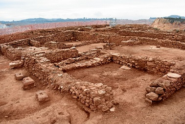

|
HUELVA ROMANA |
|
- En Aroche se localiza Arucci Vetus. Se conservan los restos de una torre funeraria y parte de un mausoleo en buen estado. Se identifica con la ciudad de la Beturia. El Itinerario Antonino, la localiza en la vía que iba desde Esuri a Pax Iulia, a 20 millas de Fines y a 30 de Pax Iulia. Turobriga. Se localiza en Aroche. Coetánea de la cercana Arucci. Llama la atención el buen estado en el que se conservan los muros de sus edificios. Destaca el conjunto un foro, el campo de Marte, las termas y una fuente, a la que se desciende por una galería inclinada. Junto a la fuente hay restos de un depósito. Poblada desde el siglo II a.e.c. la actual ciudad fue fundada en época de Nerón (54-68). Entre época Flavia (69-96) y el reinado de Adriano (117-138), se construye la mayoría de los edificios que se han excavado. A comienzos del siglo III en época de Los Severos, la ciudad es definitivamente abandonada sirviendo de cantera, para la construcción del Castillo de Aroche, la ermita de San Mamés y demás construcciones. La Casa de la Columna esta casa está parcialmente excavada, identificando nueve estancias dispuestas en torno a un área central abierta. - Santa Eulalia, en Almonaster la Real. Se conservan diversos tipos de restos que indican la existencia de varias edificaciones, destacando la torre funeraria sobre la cual se levanta la Ermita de Santa Eulalia. La ermita se asienta sobre un potente basamento romano de planta cuadrada que probablemente pertenece a una torre funeraria. - Mausoleo de Isla de Canela en Ayamonte. A la izquierda de la carretera Ayamonte-La Punta del Moral. Nos encontramos con un mausoleo romano aislado. - La Calzada romana de Berrocal. - En julio de 2017 en Minas de Riotinto, se ha hallado dentro de las instalaciones mineras unas 40 monedas romanas de oro y plata, principalmente de la época de Nerón y Trajano, de finales del s. I y el s. II. En febrero de 2019, sale a la luz una ciudad romana del siglo II en el yacimiento arqueológico de ‘Corta del Lago’. Se han excavado tres calles, las termas, un horno de panadería, y otras dependencias. Se asocia al poblado de Urium. El yacimiento data de la Edad del Bronce inicial hasta el siglo IV.
 Foto: Juan Aurelio Pérez Macías.
En junio de 2020, hallan dos hornos utilizados por los antiguos mineros romanos en Riotinto para fundir mineral de plata. Datan del siglo I a.e.c y siglo I. se han localizado en el yacimiento llamado «Look-Out». - El acueducto de Fuenteseca. Se conserva parte del trazado del acueducto y uno de los registros reutilizados posteriormente como mausoleo.
- El acueducto de Huelva del siglo I. Onuba Aestuaria. Se conserva parte
del trazado subterráneo y algunos de los registros, Fuente Vieja. La villa
romana de la Almagra, datada en los siglos I a.e.c.- VI, un yacimiento rural
de época romana, convertido en alquería islámica. El monumento funerario en
el antiguo Colegio Francés, datado en el siglo I. Los restos de la domus
romana que se halló en la calle Vázquez López. Destaca el yacimiento del
Cabezo de La Joya, una necrópolis de la época tartésica situada entre
finales del siglo VIII y la segunda mitad del siglo VI a.e.c. Uno de los
conjuntos más destacados de los Tartessos. Los restos de la muralla de
la Onuba romana, del siglo III a.e.c., situados en el Supermercado ‘El
Jamón’. - El acueducto de Boca del Lobo. Sólo se conservan restos de un arco. - El puente sobre el río Odiel. En Odiel se ha hallado un poblado dedicado a las conservas de pescado en el paraje natural de las marismas. - El puente de Niebla sobre el río Tinto. También se conservan mosaicos y restos de edificaciones de potentes sillares. - El puente sobre el arroyo Fuentidueña. - En la Dehesa se conservan una decena de enterramientos en cuppae. - Mausoleo de Punta del Moral. Se trata de un mausoleo familiar con tres enterramientos, de planta rectangular y cubierta, conservado en buen estado. - En Cerro del Moro. Restos arquitectónicos del núcleo urbano minero. - Villa de San Mamé. Su estado de conservación es bueno, observándose restos de un podium y diferentes lienzos de otras construcciones. - En Punta Umbria destaca El yacimiento romano de El Eucaliptal. Los materiales encontrados y analizados pusieron al descubierto una asentamiento localizado entre los siglos II y VI. Entre los restos encontrados se hallaba una necrópolis y un conjunto de piletas para transformar y elaborar conservas y salazones. Son los restos de la factoría pesquera romana más importante en la costa de Huelva. - Balsas de aceite en Chabuc. - Balsas de salazón en el Almendral de Saltés.
|